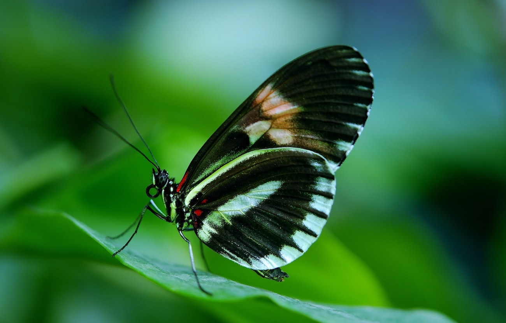
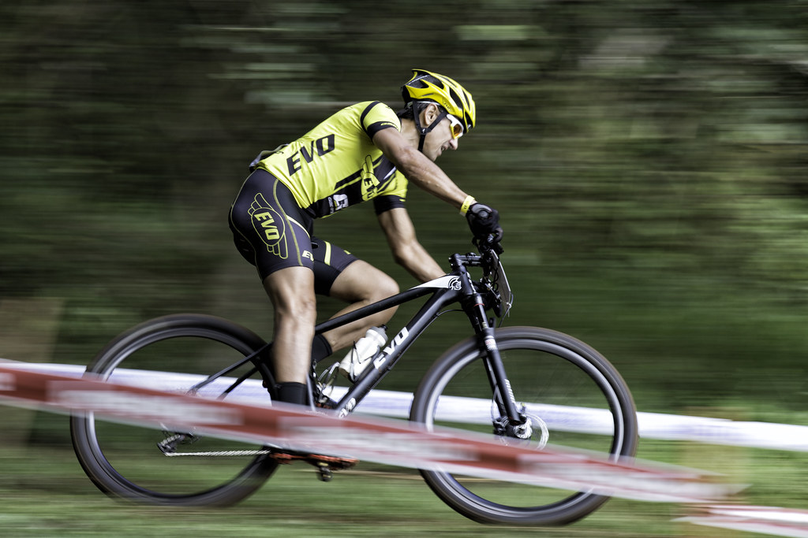
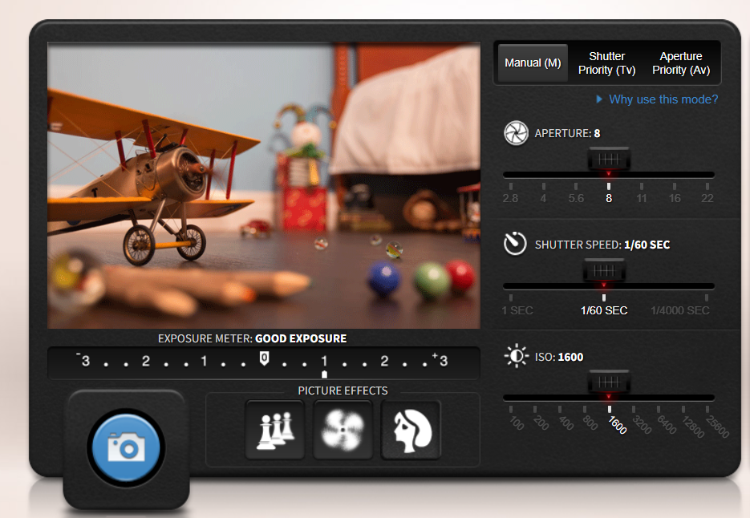
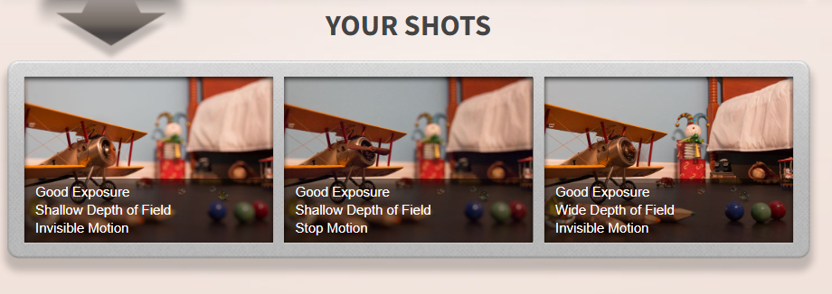

În lume există zeci de mii de modele ale camerelor digitale, cei mai mari producători sunt: Canon, Nikon, Sony, Panasonic, Olimpus, Sigma, Futjifilm, toate au același principiu de funcționare se deosebește doar tipul și nivelul de profesionalitate (cost).
Ca model de studiu se va utiliza o cameră DSLR, aparat fotografic reflex (abrevierea DSLR pentru engleză este digital single-lens reflex), schema optică este reprezentată în figura alăturată(fig.1)

Părțile componente sunt:
- Obiectivul camerei
- Oglinda reflex
- Obturator în plan focal
- Senzor de imagine
- Ecran de focalizare mat
- Lentila condensatoare
- Pentaprismă/pentaoglinda
- Ocularul vizorului
Camera în vedere tăiată este ilustrată în imaginea alăturată(fig2.)

Prima fotografie
Acum să trecem la studiul nemijlocit al ei, prima regulă recomandată este să fim atenți la lentile care nu trebuie atinse! Urmăm pașii:
Pasul 1. Montăm obiectivul dacă acesta era dezasamblat de cameră (video montarea obiectivului)
Pasul 2. Scoatem căpacul de protecție al obiectivului și apăsăm butonul On de pe aparat.
Pasul 3. Alegem modul de lucru. Pentru simplitate alegem regimul automat de fotografiere care se numește A+, acesta este un mod excelent pentru o mare varietate de situații. Aparatul foto va regla toate setările: focalizare, diafragma, viteza obturatorului, bliț și multe altele. Totuși, nu veți avea opțiuni pentru a regla oricare dintre acestea singur, așa că dacă doriți să opriți blițul sau să utilizați focalizarea manuală, de exemplu, nu veți avea acele opțiuni. Excelent pentru fotograful neexperimentat, un profesionist grăbit sau cele mai sincere fotografii.
Pasul 4. Alegem obiectul pe care îl dorim să-l fotografiem și privim prin ocular ca acesta să fie încadrat în perimetrul ocularului.
Pasul 5. Apăsăm încet, nu pînă la capăt declanșatorul pentru a permite sistemului optic să focalizeze obiectul, după semnalizarea acustică a focalizării de succes apăsăm până la capăt butonul declanșatorului, am obținut prima fotografie care va persista pe ecranul aparatului cîteva secunde, pentru a vedea fotografie după revenirea aparatului în regim de fotografiere apăsăm butonul Play (triunghi).
Regimuri frecvente de fotografiere
Modul portret
Acest mod va selecta valoarea optimă a diafragmei pentru a înmuia cel mai bine fundalul portretului dvs. Acest lucru pune mai mult accent pe subiectul dvs. Nuanțele pielii pot fi, de asemenea, atenuate digital pentru a oferi un aspect mai măgulitor persoanei pe care o fotografiați.
Modul peisaj
Acest mod este excelent pentru peisaje și fotografii de peisaj largi. Camera va seta diafragma pentru a permite o focalizare clară de la cele mai îndepărtate până la cele mai apropiate părți ale fotografiei. Blițul va fi dezactivat pentru a preveni iluminarea primului plan și pentru că un bliț mic de pe cameră este inutil pentru a ilumina suprafețele mari ale unei fotografii de peisaj. Culoarea poate fi, de asemenea, îmbunătățită, de obicei în zonele albastre și verzi, pentru a da o senzație mai vie fotografiei.
Modul Macroscopic
Modul de aproape este pentru fotografii cu flori, insecte sau orice alt subiect mic care necesită să vă apropiați. Aceasta va selecta o deschidere largă care va înmuia fundalul, punând accent pe subiect.

Modul Sport
Acest mod este cel mai bine utilizat pentru orice scenă în care are loc o acțiune rapidă. Pentru a captura imagini foarte clare și pentru a îngheța acțiunea, camera foto va selecta automat cea mai rapidă viteză de expunere posibilă.

Modul Manual
Modul manual este cel mai potrivit pentru fotograful mai experimentat, care este foarte familiarizat cu camera lui. Toate setările, viteza obturatorului, diafragma, focalizarea, ISO etc. sunt gestionate de fotograf. Acest mod poate fi folosit pentru orice fel de fotografie, dar necesită ca fotograful să înțeleagă bine modul în care toate setările camerei sunt utilizate într-o mare varietate de situații.
Prioritatea diafragmei
Prioritatea diafragmei funcționează la fel ca modul manual, dar va selecta automat viteza optimă a obturatorului pentru a se potrivi cu setarea diafragmei selectată de fotograf. Acest lucru vă permite să vă concentrați pe controlul adâncimii câmpului fără să vă faceți griji cu privire la viteza obturatorului.
Prioritate obturator
Prioritatea obturatorului permite fotografului să ajusteze viteza obturatorului, dar va selecta automat cea mai bună setare de diafragmă. Acest lucru este bun pentru a înregistra scene cu multă acțiune, permițându-vă să capturați cu ușurință imagini clare ale subiecților care se mișcă rapid cu o viteză mare de expunere sau pentru a crea un aspect neclar unei fotografii cu o viteză mică a obturatorului.
Pentru a cunoaște mai bine regimul manual și regimurile cu prioritate propun să exersați cu ajutorul simulatorului online pe care-l găsiți pe adresa:

Pentru a obține lumina optimă, poziția exponometrului trebuie să fie la zero. Rezultatele obținute sunt comentate

Succes!
Studiaza https://youtu.be/fZUtKKbnAQo